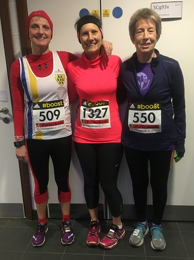

Fifteen runners contested the Canterbury 10 on Sunday 22nd January, including Jenny Austin, Grace Manzotti and Sylvia Lewis above. Andrew Milne led the team home in 37th, while Jacqui O'Reilly was our first woman in 23rd. James Graham was first M60, Keith Dowson second M50 and Sally Shewell third W55 in this Kent Grand Prix event.

Grace Manzotti writes: "Jenny, Sylvia and Grace set off from Sevenoaks on a very cold morning -6 to go to Canterbury. Jenny had done the race few years ago but it was a new race for myself and Sylvia and we didn't know what to expect. Also we had not run a 10 miler before, yes a 10k yes a half marathon but not 10 miles. We thought well whatever happens is a PB.
"It was sunny in Tonbridge and Sevenoaks but when we got to Canterbury no sun in sight and it was very foggy and still -6!! We are sure that that the views of the countryside and the villages were very nice but we couldn't see much. We could only see the runners around us and not the runners ahead nor the road ahead which was kind of strange. I didn't know but I really enjoyed this race, every minute of it. I felt strong and on the last 3 miles I felt I was flying and could do a sprint finish, the finish straight is fabulous. The 3 of us would do this race again. I really would like to see the views next time. Oh and the water at the water station was a bit frozen!!"
The SAC results were as follows:
| Pos | Name | Bib | Chip | Gun | Sex | Cat | Club |
|---|---|---|---|---|---|---|---|
| 37 | Andrew Milne | 21 | 1:02:08.7 | 1:02:12.2 | M | M- Senior | Sevenoaks Athletics Club |
| 66 | John Witton | 1172 | 1:04:03.1 | 1:04:12.7 | M | M- Senior | Sevenoaks Athletics Club |
| 74 | keith dowson | 390 | 1:04:45.1 | 1:04:47.4 | M | M- 50 to 59 | Sevenoaks Athletics Club |
| 110 | James Graham | 436 | 1:06:27.4 | 1:06:39.2 | M | M- 60 to 69 | Sevenoaks Athletics Club |
| 120 | CHRIS DESMOND | 1336 | 1:06:54.6 | 1:06:58.9 | M | M- 50 to 59 | Sevenoaks Athletics Club |
| 134 | Daniel Witt | 1425 | 1:07:25.1 | 1:07:28.9 | M | M- 40 to 49 | Sevenoaks Athletics Club |
| 197 | Jacqui O'Reilly | 595 | 1:10:23.1 | 1:10:35.5 | F | F- Senior | Sevenoaks Athletics Club |
| 483 | Sarah Shewell | 138 | 1:20:28.7 | 1:20:51.5 | F | F- 55 to 64 | Sevenoaks Athletics Club |
| 548 | Nicola Beckett | 987 | 1:23:07.7 | 1:23:21.0 | F | F- 35 to 44 | Sevenoaks Athletics Club |
| 571 | Grazia Manzotti | 509 | 1:24:13.2 | 1:25:34.2 | F | F- 45 to 54 | Sevenoaks Athletics Club |
| 614 | Jane Morgan | 69 | 1:25:49.1 | 1:26:21.7 | F | F- 35 to 44 | Sevenoaks Athletics Club |
| 624 | Jonathan Copping | 825 | 1:26:06.9 | 1:27:48.6 | M | M- 60 to 69 | Sevenoaks Athletics Club |
| 896 | JENNY AUSTIN | 1327 | 1:34:08.0 | 1:35:28.4 | F | F- 35 to 44 | Sevenoaks Athletics Club |
| ? | Sylvia Lewis | 550 | ? | ? | F | F- 55 to 64 | Sevenoaks Athletics Club |
| 1268 | Karen Copping | 826 | 2:02:21.4 | 2:04:02.6 | F | F- 35 to 44 | Sevenoaks Athletics Club |
The full results are here.